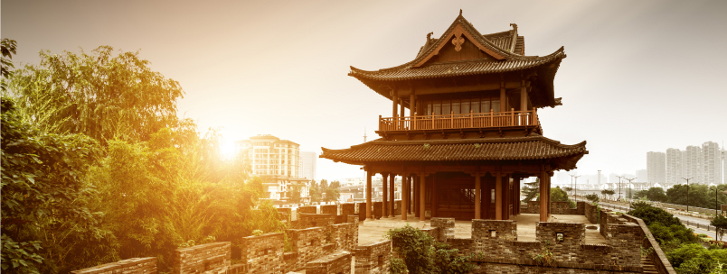

Если вас не смущает то, из кого был сделан ваш стейк — вы легко сможете оценить это блюдо в самых разных уголках Аляски.
ПодробнееЕда является важнейший частью французской культуры, поэтому некоторые блюда и их подача смогут удивить даже самых требовательных туристов.
Подробнее